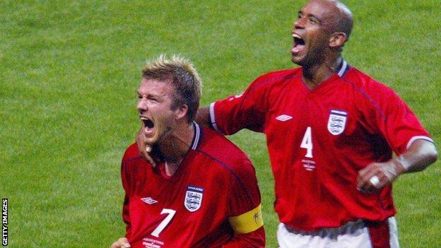
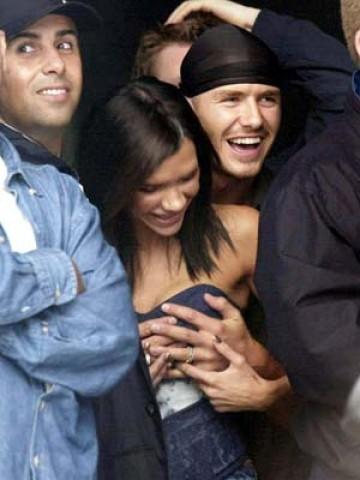

Chương Mười Hai

orld Cup lần thứ 17 diễn ra ở Nhật Bản và Hàn Quốc, nhưng đội tuyển Anh chỉ thi đấu tại Nhật. Đối với David, đó là một trải nghiệm thú vị, vì Nhật có lẽ là quốc gia hâm mộ Beckham nhất trên thế giới. Hình ảnh Bekamu (tên tiếng Nhật của Beckham) xuất hiện trên trang bìa các tạp chí Nhật Bản trung bình 7 lần một tuần, còn website tôn vinh anh tại xứ sở Thái Dương phải kể đến hàng trăm. Ngay ở Anh, Beckham cũng không được mến mộ đến vậy.
Muốn biết ảnh hưởng của David ở Nhật, cứ hỏi ông Ted. Hôm tới phi trường Tokyo, ông cùng đi với Terry Butt, cha của Nicky Butt. Vì Terry trùng tên với một hooligan nổi tiếng, cảnh sát Nhật chặn lại, nhất quyết không cho ông nhập cảnh. Thấy bạn bị làm khó dễ, ông Ted đứng ra can thiệp. Vừa nghe ông tự giới thiệu, viên cảnh sát tròn xoe mắt, há hốc mồm, cứ ngây người lặp đi lặp lại “Bec…kham…Bec…kham”. Một cảnh sát khác, bình tĩnh hơn, hỏi lại kỹ càng và đòi xem giấy tờ tùy thân. Sau khi xác định rõ nhân thân Ted Beckham, các thầy quyền kính cẩn mời ông đi qua, đồng thời tha luôn Terry Butt.
Đến lúc vào Tokyo, đi ăn nhà hàng cũng vậy. Ông bà Ted và Sandra một tiếng Nhật cắn đôi không biết, đành cứ ra hiệu. Hết đứng lên đập cánh, ra ý muốn ăn gà, lại ngồi xuống, chĩa tay lên đầu làm sừng, để hỏi có món bò không? Hầu bàn đứng ngớ mặt, chẳng hiểu mô tê gì. Sau rốt, một người khách đang ngồi ăn phải ra dịch giúp. Người này tiếng Anh chỉ thuộc hạng “bồi”, nhưng tạm đủ để giao tiếp cơ bản. Khi biết mình đang nói chuyện với ai, anh ta cũng phản ứng y hệt những cảnh sát ở sân bay:
-Ông…bố Beckham?
-Đúng vậy.
-Bà…mẹ Beckham?
-Phải rồi.
Thế là cả quán ai cũng ngừng ăn, náo động cả lên. Tất cả xúm lại quanh ông bà Ted, năn nỉ họ cho chụp hình chung, mỗi người một kiểu ảnh. Lần đầu tiên trong đời, hai ông bà có cảm giác như mình là vua và hoàng hậu. Ở Anh, thiên hạ chỉ mê David, có ai hâm mộ ông bà như thế đâu!
Ông bà Ted còn được như thế, không cần nói cũng biết David được đón chào ra sao. Người ta ngồi chầu chực trong hành lang khách sạn, trước cửa phòng David, chỉ cần anh mở cửa bước ra một bước, ngay lập tức sẽ bị bủa vây. David đi mua sắm ở trung tâm nào, cảnh sát phải đóng cửa cả trung tâm ấy để bảo đảm an ninh. Xe buýt chở đội tuyển Anh mỗi khi di chuyển đều hết sức khó khăn, do fan hâm mộ bao quanh hàng vòng, số lượng lên đến 4 000 – 5 000 người, đủ mọi lứa tuổi, từ thiếu nhi cho đến bà lão 70…
David vắng mặt trong tất cả các trận giao hữu tiền World Cup của Tam Sư. 4 hôm trước trận đấu bảng đầu tiên với Thụy Điển, anh mới có thể ra sân tập cùng đồng đội. Ngày thi đấu, trên sân Saitama, cổ động viên Thụy Điển chỉ có vài ngàn người, ngồi nép vào một góc, còn lại trên khán đài tràn ngập 2 màu trắng đỏ. Sự cuồng nhiệt của người hâm mộ Nhật khiến các cầu thủ Anh cảm thấy như đang ở nhà, dù thật sự họ cách xa quê hương nửa vòng trái đất. Dẫn đầu đội tuyển bước ra sân, tim David đập mạnh như trống ngũ liên, lòng tự hào vô hạn. Anh đã từng dự World Cup 4 năm trước, song lần này mang băng thủ quân, cảm giác hoàn toàn khác hẳn.
Tuy nhiên, nhìn lại thì thấy việc David ra quân trong trận đầu là cả một sự gắng gượng, bởi chấn thương anh vẫn chưa lành hẳn. David thực hiện thành công cú phạt góc, giúp Sol Campbell mở tỷ số vào phút 24, nhưng sau đó, anh cứ đuối dần. Sang đến hiệp hai, David bắt đầu cảm thấy đôi chân không còn nghe theo lời mình. Phút 63, sau bàn gỡ hòa của Thụy Điển, anh được cho ra nghỉ, nhường chỗ cho Kieron Dyer.
Hòa 1 – 1 trận mở màn không phải thảm họa gì. Trận thứ hai mới là “tối đại vấn đề”, do đối thủ lại là Argentina. Argentina năm nay còn được đánh giá cao hơn năm 1998. Thể hiện phong độ vũ bão ở vòng loại, họ được coi là ứng cử viên số một cho chức vô địch. Để giải tỏa sức ép, Beckham nảy ra sáng kiến lạ. Biết các bạn ai cũng quá ngán những thứ đồ “lành mạnh”, anh đề nghị HLV Eriksson cho toàn đội được ăn thả cửa một bữa McDonald’s. Thông thường, chẳng ai chấp nhận đề xuất “phản khoa học” đó. Trước trận cầu sinh tử lại đi ăn đồ độc hại là nghĩa lý gì? May mắn, Eriksson cũng là người “chịu chơi thích đi bơi”, nên đồng ý ngay.
Với một bụng đầy những hamburger và khoai tây chiên, ĐTQG Anh bước vào đại chiến. Chẳng biết có phải tác dụng của…burger hay chăng, mà Tam Sư chơi đầy hưng phấn, giữ được thế trận cân bằng với đối thủ. Chân bị thương của David vẫn nhức, nhưng càng đá càng hăng, anh tập trung cao độ vào trận đấu, quên cả vết đau. Phút cuối hiệp một, Michael Owen bị đốn ngã trong vòng cấm địa. Trọng tài cho tuyển Anh được hưởng phạt đền.
Ai sẽ đá phạt đền? Khán giả trên SVĐ hoang mang nhìn nhau. Dĩ nhiên là Beckham, song có nên không? Liệu Beckham có còn bị ám ảnh bởi ký ức bốn năm về trước? Michael Owen dường như cũng lo lắng như vậy, anh hỏi nhỏ David:
-Anh muốn em sút không?
-Không, cứ để anh!
David đặt banh vào chấm phạt đền, lùi vài bước lấy đà. “Cố nhân” Diego Simeone bước đến, đứng xớ rớ trước mặt anh, chìa tay ra. “Lại làm trò gì đây? Sắp đá penalty mà bắt tay cái gì?” David nghĩ thầm. Anh ngó thẳng, làm lơ. Scholes và Butt phải tiến lên, đẩy Simeone qua một bên.
Mọi người lo lắng không phải không có lý. David chẳng phải gỗ đá. Ký ức quả thật đã hiện về, làm chân anh nặng trĩu. Cú phạt đền này quyết định tất cả, vấn đề không chỉ là thành bại cá nhân anh, mà còn là thể diện quốc gia. Không lẽ đội tuyển cứ nhất định phải thua Argentina, không lẽ cứ mãi mãi bị Albicelestes chế giễu, cười vào mặt? Trước sức ép ngàn cân, phải sút sao càng đơn giản càng tốt, càng cố gắng đá hiểm, càng dễ thất bại.
Tiếng còi vang lên…
Sút…
Vào!!!
Đường sút không thể đơn giản hơn, ngay giữa chính diện khung thành. Thủ môn bất lực vì đã lỡ đà, nghiêng về phía trái. Beckham giang rộng hai tay, chạy dọc theo đường biên trong tâm trạng thăng hoa, không nói nên lời. Oán đã xong, nợ đã trả, bóng ma France 1998 từ nay chính thức ngủ yên.

Beckham ăn mừng bàn thắng vào lưới Argentina (Ảnh: BBC)
Hiệp hai thuộc về Argentina. Càng về cuối, họ càng áp đảo, nhưng không sao ghi được bàn thắng. Argentina năm đó là hiện thân của cái đẹp mong manh. Lối chơi của họ đẹp lắm, xảo diệu lắm, như dệt gấm thêu hoa, có điều không hề hiệu quả: Kết thúc những pha phối hợp đẹp như mơ đều là các cú dứt điểm vu vơ, hoặc trúng ngay thủ môn, hoặc bay tận đẩu tận đâu! Ứng cử viên số một đành ôm đầu về nước chỉ sau ba trận.
Còi dứt trận vừa thổi, dân Anh lên cơn cuồng. Từ London, Manchester, đến Birmingham, Newcastle…, thiên hạ đổ xô ra đường, ôm nhau, hôn nhau, gào lên, nấc lên vì vui sướng. Giao thông hỗn loạn, ùn tắc, xe cộ không nhúc nhích được dù một mảy may. Không đoạt World Cup cũng không sao, thắng Argentina như thế này là đủ sướng rồi!
Chiến thắng đại kình địch, Tam Sư nhẹ nhàng hòa không bàn thắng với Nigeria, đoạt vé đi tiếp. Trước trận gặp Đan Mạch vòng 1/16, đội lại chén thỏa thuê một bữa McDonald’s. Kết quả thật mỹ mãn: Anh thắng 3 – 0, giành quyền vào tứ kết, đối đầu cùng đội 4 lần vô địch thế giới Brazil. David kiến thiết một bàn, và đá đủ 90 phút trong trận đại thắng, dù trong những phút cuối, vì quá đau, anh phải chạy bằng cạnh bàn chân.
Người Anh tự tin hơn bao giờ hết: Một khi đã loại được ứng viên số một Argentina, sao phải sợ Brazil? Hơn nữa, nếu loại được Brazil, đường vô địch sẽ mở rộng thênh thang. Italy, Tây Ban Nha, Bồ Đào Nha, lẫn đương kim vô địch Pháp đều đã xách valy về nhà, Hà Lan thậm chí không qua nổi vòng loại. Đối thủ lớn duy nhất còn lại là Đức, đội mà Anh vừa thắng 5 – 1 cách đó không lâu. 36 năm sau Bobby Moore, David Beckham đứng trước cơ hội trở thành thủ quân thứ hai của ĐTQG Anh được nâng cao cúp vàng.
Tuy vậy, vấn đề nằm ở chữ “nếu”. Nếu chiếc mũi của nữ hoàng Cleopatra ngắn hơn một chút, lịch sử nhân loại đã rẽ sang một con đường khác, song thực tế là mũi bà không ngắn! Ở đây cũng thế, dù thế nào đi nữa, Brazil vẫn nhỉnh hơn Anh. Trận tứ kết tại Shizuoka, mặc cho Michael Owen đưa Anh vượt lên, các vũ công Samba vẫn vô tư, từ tốn triển khai thế trận. Trong họ như có sự tự tin tuyệt đối: Chẳng sao, chỉ là tai nạn nhỏ, cứ từ từ, đâu sẽ vào đấy. Ronaldinho vẫn cười toe toét, và Ronaldo vẫn vui tươi, ôm vai trọng tài. Quan sát thái độ đối phương, Beckham toát mồ hôi: Thật đáng sợ! Bị dẫn trước ở tứ kết World Cup mà vẫn có thể tự nhiên như không!
Quả nhiên, mọi việc đâu lại vào đấy. Rivaldo kịp gỡ hòa trước lúc hiệp một kết thúc, rồi ngay khi hiệp hai bắt đầu, thủ thành Seaman dâng cao, để lọt một cú không biết là chuyền hay sút của Ronaldinho. Sau bàn thắng, Ronaldinho nhận thẻ đỏ, nhưng trong những phút còn lại, tuyển Anh không tận dụng được lợi thế hơn người. Thật ra, thẻ đỏ của Ronaldinho có khi còn gây hại cho…Anh, bởi nếu đủ nhân sự, Brazil chơi rất phóng khoáng, còn khi mất người, họ rút về phòng thủ hết sức chặt chẽ, không sao xuyên thủng được.
Biết đâu, NẾU ăn McDonald’s thêm lần thứ ba, mọi việc đã khác?
Khi các cầu thủ Anh xếp hàng, vẫy tay chào khán giả, ai nấy đều đứng dậy, vỗ tay nhiệt liệt, cả người Nhật, người Anh, lẫn người Brazil. Vào tứ kết World Cup, thắng Argentina, và chỉ chịu nhường bước trước nhà vô địch: Một thành tích không hề tồi chút nào. Hàn – Nhật 2002 không phải kỳ World Cup cuối cùng, song là kỳ thành công nhất trong sự nghiệp Beckham…
Từ Nhật trở về, David náo nức chờ đợi đứa con thứ hai ra đời. Không siêu âm, nên anh và Victoria không biết giới tính của con. Hai vợ chồng cùng đồng ý: Nếu con trai sẽ đặt tên Romeo, còn con gái sẽ đặt Paris. Chẳng biết vì sao, Victoria có dự cảm sẽ sinh con gái. Cô thường chỉ vào bụng, đùa với Brooklyn:
-Nào, chào em gái Paris của con đi!
Brooklyn tưởng thật. Một hôm, được bố mẹ dẫn đi mua sắm, cậu bé thì thầm với người bán hàng:
-Mẹ cháu sắp sanh em gái, tên là Paris.
Người bán hàng rỉ tai nhà báo, nhà báo rỉ tai nhau, mừng húm: Tự dưng ẵm quả từ trên trời rơi xuống, không những biết giới tính đứa con trong bụng Posh, mà biết đến cả tên. Con nít không biết nói dối, chính miệng Brooklyn nói ra, ắt không thể sai. Câu nói của Brooklyn được tường thuật trên mặt báo, mọi người chắc mẩm chờ đón Paris. Chẳng ngờ ngày 1 tháng 9, 2002, lại ra đời bé trai Romeo.
Cũng như lần trước, David xăm tên con vào lưng, và cho thêu lên giày.

David âu yếm Victoria trong một buổi đi xem hòa nhạc (Ảnh: Nowmagazine)